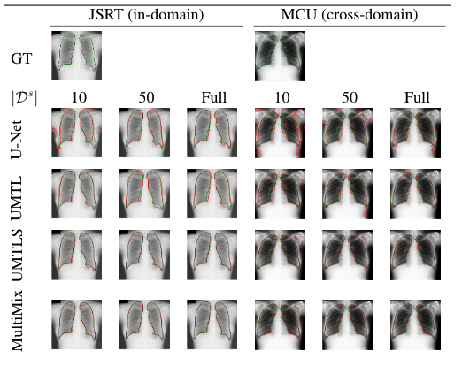
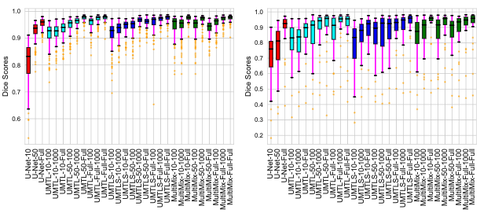
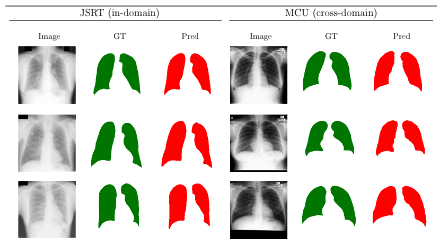
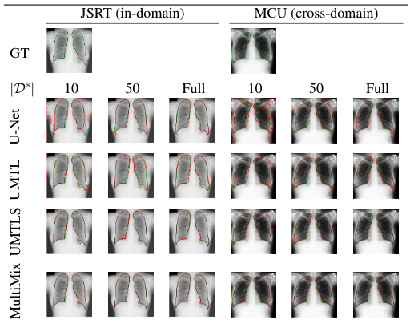
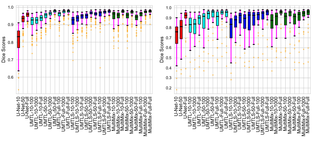
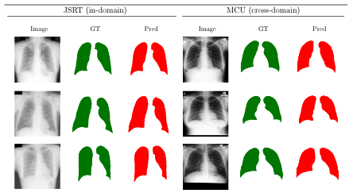
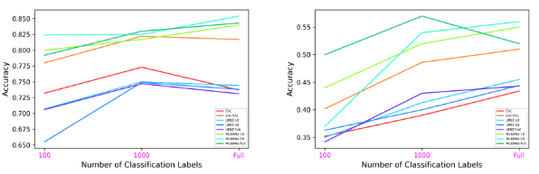
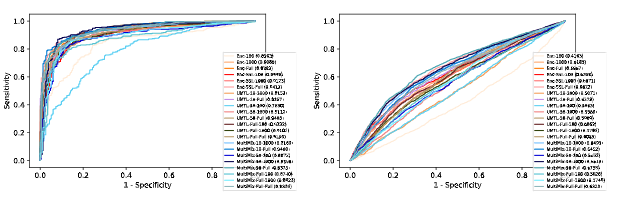
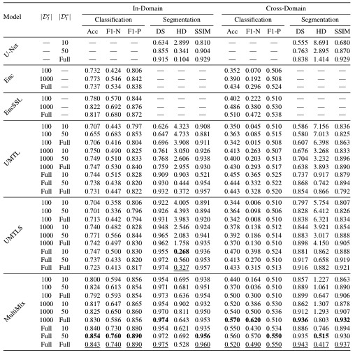

Visualizations
Segmentation Visualizations prove the effectiveness of our model in multiple domains over baselines.
  Our proposed model performs joint semi-supervised classification and segmentation by employing a confidence-based augmentation strategy for semi-supervised classification along with a novel saliency bridge module that guides segmentation and provides explainability for the joint tasks.
Our paper "MultiMix: Sparingly Supervised, Extreme Multitask Learning From Medical Images" was accepted to IEEE ISBI 2021 as a full paper. The paper was presented in April and is availabe in the conference proceedings. The extension of our ISBI paper, "Generalized Multi-Task Learning from Substantially Unlabeled Multi-Source Medical Image Data" was accepted to the MELBA Journal. Here are some photos of us presenting as ISBI.
Segmentation Visualizations prove the effectiveness of our model in multiple domains over baselines.
  For classification and segmentation, metrics and graphs demonstrate the superiority of MultiMix against baselines.
  To be announced
@inproceedings{haque2021multimix,
title={Multimix: Sparingly-Supervised, Extreme Multitask Learning from Medical Images},
author={Haque, Ayaan and Wang, Adam and Terzopoulos, Demetri and others},
booktitle={2021 IEEE 18th International Symposium on Biomedical Imaging (ISBI)},
pages={693--696},
year={2021},
organization={IEEE}
}